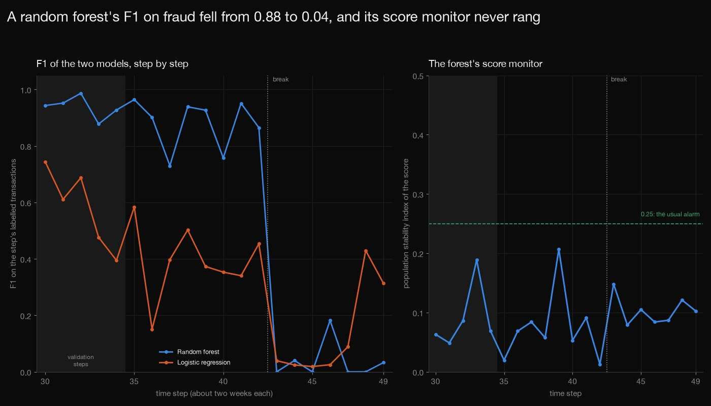
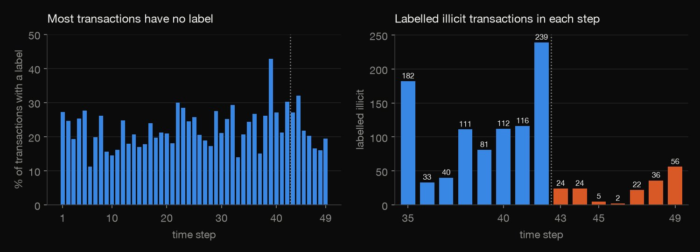
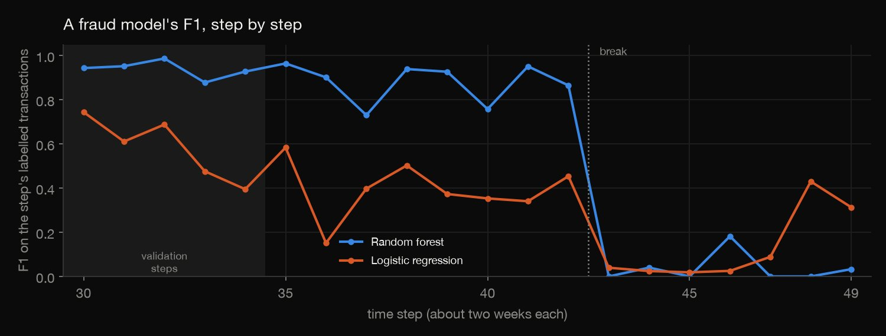
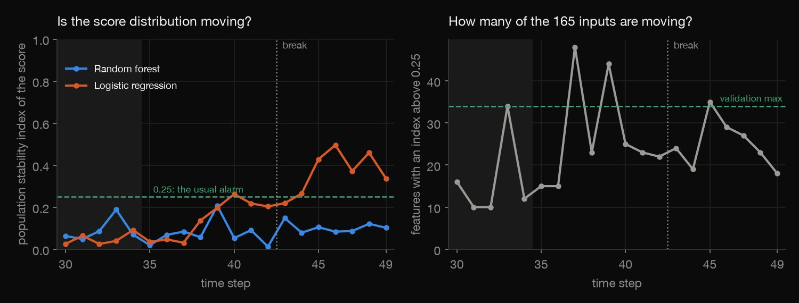
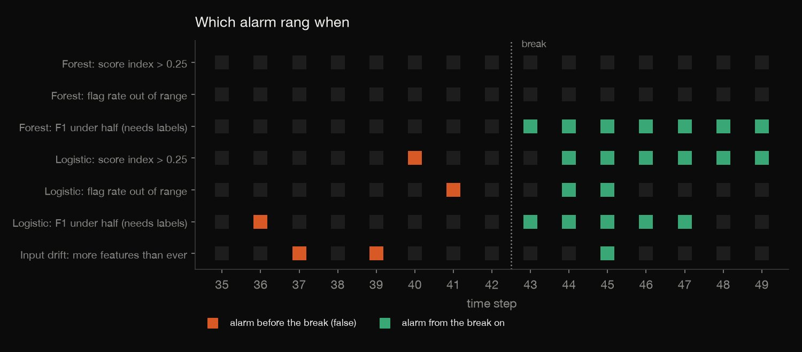
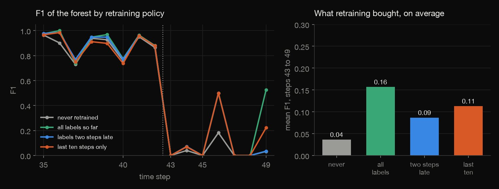

Python · Model monitoring · 2026-10
Would You Notice When a Fraud Model Breaks?
On 203,769 real Bitcoin transactions, a fraud model's F1 fell from 0.88 to 0.04 when the market broke, its own score monitor never rang, drifting inputs raised false alarms before the break, and the one rule that caught it needed labels, which only 23% of transactions have.

One data set and one break (step 43; the dark-market shutdown behind it is how the data set's literature describes it, and is not tested here). The thresholds were fixed in advance, not tuned. The F1 rule needs labels, used as soon as a step ends, and only 23% of transactions have one. Untuned models on the 165 features, not the transaction graph. Licence: CC BY-NC-ND 4.0 as stated on the data set's Kaggle page, so nothing from the data is published, only counts, scores and summaries. Source: Weber et al. (2019), Elliptic.
01 — The problem
A fraud model is only useful while it still works, and the usual way to watch one is its output: the score it gives, how many transactions it flags, whether its inputs drift. If a fraud model stops working one day, which of those monitors tells you, and how many false alarms do they raise before it does?
The task follows DataCamp's "Monitoring a Financial Fraud Detection Model". The list names no data set, and the best-known public fraud file (the ULB credit-card transactions) covers only two days, too short to show drift, so the data here is the Elliptic Bitcoin set instead: 203,769 real transactions over 49 two-week steps, with a break at step 43 that the papers using it report defeating trained models (data from Weber et al., 2019).
02 — What I built
Two models trained once on the first 29 steps, then watched step by step:
- The audit: counts, blanks, and how few transactions carry a label.
- The models: a random forest and a regularised logistic regression, frozen after step 29.
- The monitors: score drift, flag rate, drifting inputs and falling F1, with four alarm rules fixed in advance and five validation steps to learn what normal looks like.
- Retraining: four policies, including labels that arrive late.
- Check:
check.pyparses the whole file in plain Python, proves the logistic fit is optimal, refits the 46 forests and recomputes the rest by hand: 1,457 numbers.
03 — How it was built
- 01
Download the transactions
The Elliptic data set from the PyTorch Geometric mirror: one row per transaction with its time step and 165 anonymised features, and a file of labels (illicit, licit or unknown). About 690 MB, so it is fetched, never committed, with its checksums. The licence is CC BY-NC-ND 4.0, so only aggregates are published.
BASE = "https://data.pyg.org/datasets/elliptic/" - 02
Train once on the first 29 steps
A random forest (100 trees, flag at 0.5) and an L2 logistic regression, both fitted on the 26,381 labelled transactions of steps 1 to 29 and never refitted. Steps 30 to 34 are the validation steps, where the monitors learn what normal looks like; steps 35 to 49 are deployment.
rf = RandomForestClassifier(n_estimators=100, random_state=0, n_jobs=-1).fit(X[tr], y[tr].astype(int)) - 03
Watch four things, step by step
For each step: the population stability index (PSI) of the model's score against the validation steps (ten bins from the validation deciles; 0.25 or more is the usual alarm), the share of transactions flagged, how many of the 165 inputs have their own index above 0.25, and F1 on the step's labelled transactions. The four alarm rules were fixed in advance.
pa = np.maximum(np.histogram(a, bins=edges)[0] / len(a), FLOOR); pe = np.maximum(np.histogram(e, bins=edges)[0] / len(e), FLOOR); return float(np.sum((pa - pe) * np.log(pa / pe))) - 04
Retrain four ways
From step 35 the forest is refitted never, every step on all labels so far, every step on labels that arrive two steps late, or every step on the last ten steps only, and scored on each next step.
for pol, delay in (("never", 0), ("every step, all labelled so far", 0), ("every step, labels two steps late", 2), ("every step, last ten steps only", 0)): - 05
Prove the fit and recount the rest
check.pyparses the 203,769 x 167 file in plain Python and checks that the stored logistic coefficients make the gradient of the penalised likelihood zero on the training rows (the objective is strictly convex, so only the optimum does). It refits the 46 forests with scikit-learn and recomputes every score, precision, recall, interval, F1, average precision, AUC, flag rate, index, alarm and retraining result by hand.assert gmax < 1e-6, ("logistic coefficients are not the optimum", gmax)
04 — Results
The data and its labels. 203,769 transactions in 49 steps. Only 22.9% have a label: 4,545 illicit and 42,019 licit; 77.1% are unknown, and a step's labelled share runs from 11.2% to 42.9%. The deployment steps hold 16,670 labelled transactions, 1,083 of them illicit, and after the break only 24, 24, 5, 2, 22, 36 and 56 per step, so one step's F1 rests on few cases (the Wilson interval of each recall is in results/performance.csv).

Before the break. The random forest holds up: mean F1 0.938 on the validation steps and 0.879 on steps 35 to 42 (lowest 0.730, at step 37), mean average precision 0.902, mean AUC 0.963. The logistic regression is a weak baseline: mean F1 0.394 on steps 35 to 42, because it flags 48% to 67% of all transactions.
The break. At step 43 the forest's F1 falls to 0.00: of the step's 1,370 labelled transactions, 24 illicit, it flags 4 and catches 0 of the illicit ones. Over steps 43 to 49 its mean F1 is 0.036 and its mean AUC 0.712 (against 0.963), so the ranking degrades too, not only the cut-off. The logistic regression's mean F1 goes from 0.394 to 0.134; it had less to lose.
| Step | Illicit | Caught | F1 |
|---|---|---|---|
| 41 | 116 | 107 | 0.95 |
| 42 | 239 | 189 | 0.86 |
| 43 (break) | 24 | 0 | 0.00 |
| 44 | 24 | 1 | 0.04 |
| 45 | 5 | 0 | 0.00 |
| 46 | 2 | 1 | 0.18 |
| 47 | 22 | 0 | 0.00 |
| 48 | 36 | 0 | 0.00 |
| 49 | 56 | 1 | 0.03 |

The score monitor did not notice the forest breaking. Its score index stays at or below 0.207 in every deployment step, never reaches 0.25, and is 0.148 at step 43; its flag rate after the break (5.1% to 9.5%) lies inside the range seen in validation (3.8% to 19.6%). The model's output looked normal while it was missing the fraud. The logistic regression's score index did cross 0.25 (from step 44 on), one step after its F1 had collapsed, and once before the break, at step 40.

Input drift is not model decay. The number of the 165 inputs with an index above 0.25 was 48 at step 37 and 44 at step 39, both before the break, and 24 at step 43, against a validation maximum of 34. Many inputs move from one fortnight to the next without the model breaking, and the break does not stand out in the count; whether the inputs changed or the link between inputs and label did cannot be told from the inputs' own distributions.
Which alarms rang. False is the number of steps from 35 to 42 (of 8) on which a rule rang, Rang the number of steps from 43 to 49 (of 7), and First the first of those. Score is the score index above 0.25, flag rate is a flag rate outside the validation range, F1 is an F1 under half the validation mean (which needs the labels), and input drift is more drifting inputs than any validation step. Only the F1 rules rang at the break, and the forest's own two output monitors never rang.
| Rule | False | Rang | First |
|---|---|---|---|
| Forest: score | 0 | 0 | never |
| Forest: flag rate | 0 | 0 | never |
| Forest: F1 | 0 | 7 | 43 |
| Logistic: score | 1 | 6 | 44 |
| Logistic: flag rate | 1 | 2 | 44 |
| Logistic: F1 | 1 | 5 | 43 |
| Input drift | 2 | 1 | 45 |

Retraining. Refitting the forest every step from step 35 on lifts the mean F1 over steps 43 to 49 from 0.036 to 0.157 with all labels so far, 0.113 with only the last ten steps and 0.087 if the labels arrive two steps late. It helps, but it does not restore the F1 of before the break: the F1 is still zero at steps 43, 45, 47, 48 under every policy, and the gains come from steps 44, 46, 49, three steps with 24, 2 and 56 labelled illicit transactions. (AP is average precision.)
| Policy | Mean F1 | Mean AP |
|---|---|---|
| Never retrained | 0.04 | 0.13 |
| All labels so far | 0.16 | 0.42 |
| Labels two steps late | 0.09 | 0.29 |
| Last ten steps only | 0.11 | 0.36 |

05 — What I'd do next
- Delay the labels in the alarm too, not only in retraining, to see how many steps pass before the F1 rule can ring in practice.
- Use the transaction graph, which Elliptic also provides, and test whether graph features drift less than the 165 used here.
- Try a drift-aware method, or a monitor on the model's confidence, and see whether any output monitor can catch the break.